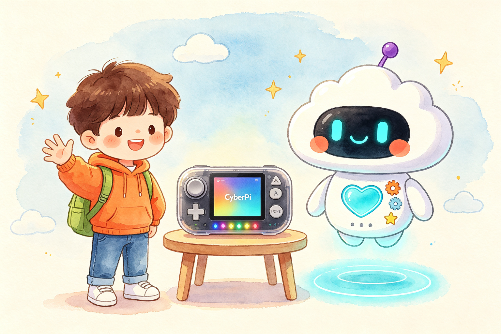

32 节课 · 4 大章节 · 全程动手演示
和团团、点点一起
和团团、点点一起
用 CyberPi 做出 AI
读完一本 AI 绘本，再来搭一个 AI 程序！用 mBlock 彩色积木给 CyberPi（童芯派）编程——传感器当眼睛和耳朵，屏幕和彩灯当嘴巴，把故事里的 AI 知识亲手演出来。

信息 → 程序 → 反应
每课 10 分钟上手
课程探险地图
Learning Path
第一章 信息与感知（1–8 课）
第二章 算法与思维（9–16 课）
第三章 机器学习（17–24 课）
第四章 AI 创造与未来（25–32 课）
已完成
全部课程
32 Lessons 和绘本课一一呼应这套课怎么学
How It Works读故事
每课先回看同名 AI 绘本课的故事，带着问题进入编程
搭积木
在 mBlock 里拖彩色积木，学会顺序、条件、循环、变量
看效果
程序上传到 CyberPi，灯亮、屏显、发声，AI 知识现场演示
做挑战
每课一个动手挑战 + 随堂问答，答对点亮勋章